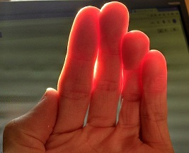
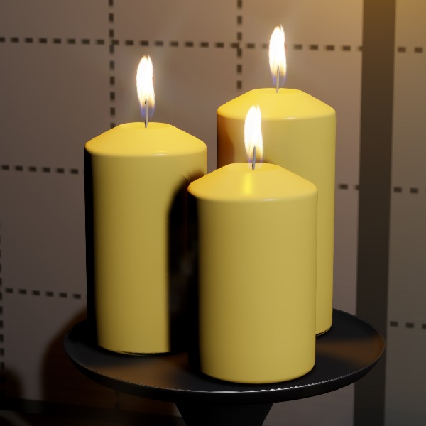
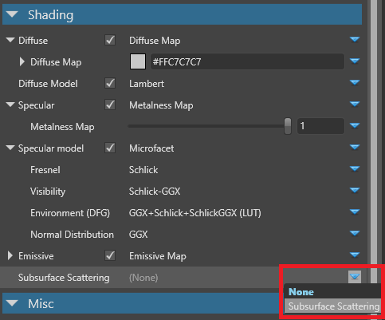
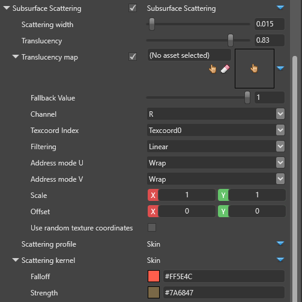
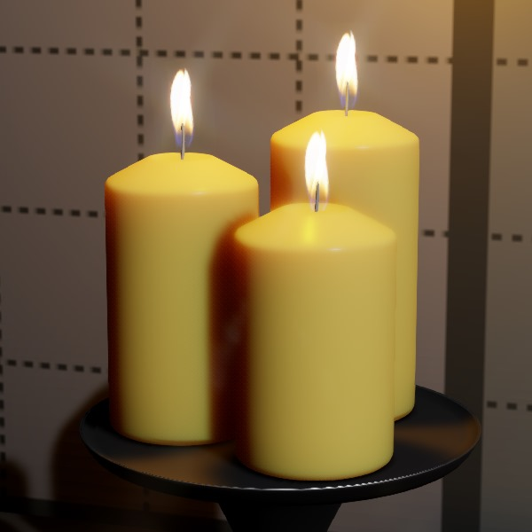
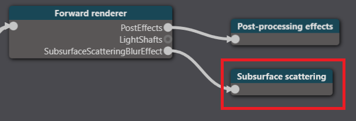
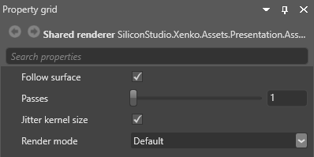

Subsurface scattering
Warning
Приносим свои извинения за неудобства. Для этой страницы нет перевода на русский язык. Она будет отображаться на английском языке.
Intermediate Artist
When you enable subsurface scattering on a material, light is reflected at irregular angles inside the model. You can use this to realistically render translucent materials such as skin, wax, leaves, marble, and porcelain.
The photo below demonstrates a real-life example of the effect:

(Image courtesy of Davepoo2014, shared under Creative Commons Attribution-Share Alike 4.0 International license)
The screenshots below demonstrate the use of subsurface scattering in Stride to render wax:
| Subsurface scattering off | Subsurface scattering on |
|---|---|
|  |
The shadows are much softer in the second image, as more light passes through the candles.
Enable subsurface scattering
Select the material you want to use subsurface shading.
In the Property Grid, under Shading, next to Subsurface scattering, click
 (Replace) and choose Subsurface scattering.
(Replace) and choose Subsurface scattering.
Properties

| Property | Function |
|---|---|
| Scattering width | How far the light scatters in world units |
| Translucency | How much light pentrates the material. 0.0 is no translucency; 1.0 is max. |
| Translucency map | Specify a grayscale map to control how translucent different regions of the material are. Brighter values produce more scattering. For example, ears should scatter more light than the top of the head, because they're thinner and therefore light passes through them more easily. The texture is multiplied by the Translucency parameter. |
| Scattering profile | The scattering profile to use during the forward render pass.
|
| Scattering kernel | The scattering kernel to use in the subsurface scattering post process.
|
Transluency: 0.2 |
Transluency: 0.98 |
|---|---|
|  |
Graphics compositor options
There are additional subsurface scattering options in the graphics compositor editor. These options apply globally to all materials that use subsurface scattering.
In the Asset View (in the bottom pane by default), double-click the Graphics Compositor asset.

The graphics compositor editor opens.
Select the Subsurface scattering node.

In the Property Grid (on the right by default), edit the properties.

Properties
| Property | Function |
|---|---|
| Follow surface | Prevent light scattering across large depth differences. Affects GPU performance. |
| Passes | The number of times the blur is executed. More passes produce smoother results (less noise and banding). |
| Jitter kernel size | Use noise to reduce banding artifacts caused by undersampling. Creates a smoother effect, but is technically less accurate (sometimes noticeable at close distances). |
| Render mode | Change the render mode for debugging purposes |